00:02为了说明神经网络如何工作，我们从一个例子开始讲起。
00:07我们将用一个需求预测的例子，你关注一款产品并试图预测：这款产品会不会成为畅销品？
00:18在这个例子中，你销售 T 恤，你想知道某款特定的 T 恤是否会成为畅销品，也就是，是或否。
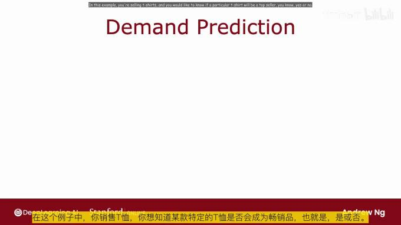
00:28你收集了不同 T 恤的数据，包括它们以不同价格出售的情况，以及哪些成了畅销品。
00:36如今，零售商就使用这类应用来更好地规划库存水平和营销活动。
00:45如果你知道什么可能成为畅销品，你就会提前规划，比如，提前多采购一些库存。
00:52那么，在这个例子中，输入特征 x 是 T 恤的价格，这也是输入给学习算法的数据。
01:02如果你应用逻辑回归，对数据拟合一个 S 型函数，可能看起来像那样，那么你的预测输出可能像这样：一除以一加 e 的负 wx 加 b 次方。r。
01:16之前，我们曾将其写作 f(x)，作为学习算法的输出。
01:23为了接下来构建神经网络，我要稍微改一下术语，用字母 A 来表示这个逻辑回归算法的输出。
01:34术语 A 代表激活，实际上这是一个来自神经科学的术语，指的是一个神经元向其下游的其他神经元发送高输出或电脉冲的程度。
01:48事实证明，这个逻辑回归单元，或者说这个小小的逻辑回归算法，可以被看作是对大脑中单个神经元的一个高度简化的模型。N。
02:00在这个模型中，神经元所做的是接收它的输入一一价格 x，然后计算上面的这个公式，并输出通过这个公式算出的数字 a，它输出的是这款 T 恤成为畅销品的概率。
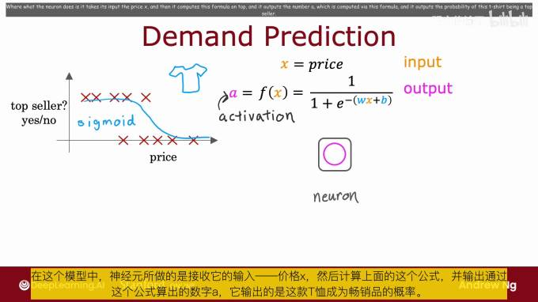
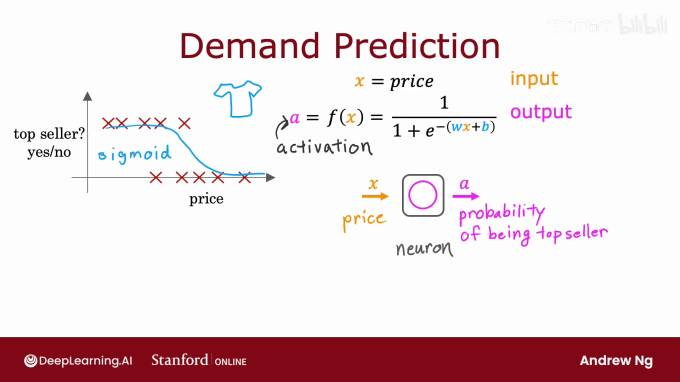
02:18另一种思考神经元的方式是，把它看作一台微小的计算机，其唯一的任务就是输入一个或几个数字，比如价格，然后输出一个或几个其他数字。
02:34在这个例子里，也就是输出这款 T 恤成为畅销品的概率。
02:40正如我在上一个视频中提到的，一个逻辑回归算法比你大脑中任何生物神经元所做的都要简单得多，这就是为什么人工神经网络是对人类大脑如此极度简化的模型，尽管在实践中，正如你所知，深度学习算法确实效果非常好。
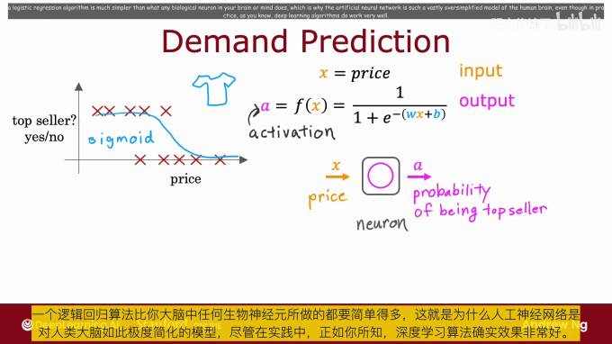
03:04鉴于对单个神经元的这种描述，构建一个神经网络现在只需要把一堆这样的神经元连接起来，或者说组合在一起。
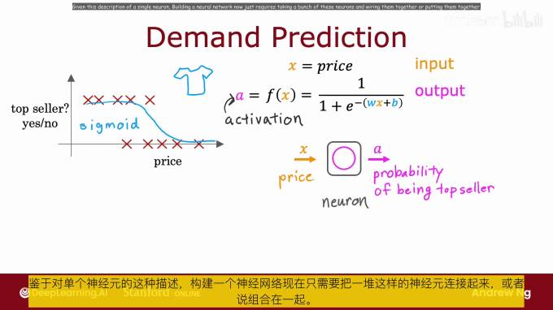
03:15我们现在来看一个更复杂的需求预测例子。
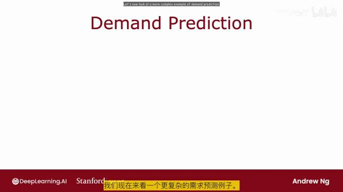
03:19在这个例子中，我们将用四个特征来预测一款 T 恤是否会成为畅销品。
03:26这四个特征是：T 恤的价格、运费、该款 T 恤的市场营销投入，以及材质质量。
03:35是高质量的厚棉布，还是质量可能较差的材料？
03:42现在，你可能会推测，一款 T 恤能否成为畅销品实际上取决于几个因素。
03:49第一，这款 T 恤的负担性如何？
03:52第二，潜在买家对这款 T 恤的认知度如何？
04:00买家或潜在买家是否认为这是一件高品质的 T 恤？
04:06因此，我现在要做的是创建一个人工神经元，来尝试估算人们认为这款 T 恤价格非常实惠的概率。
04:17而负担性主要取决于价格和运费，因为你必须支付的总金额是价格加上运费的总和。
04:26所以，我们将在这里使用一个小神经元，一个逻辑回归单元，来输入价格和运费，并预测：人们是否认为这很实惠？。
04:38其次，我将在这里创建另一个人工神经元，来估算是否存在很高的认知度。
04:46而在这个例子中，认知度主要取决于 T 恤的市场营销投入。
04:51最后，我将创建另一个神经元来估算：人们是否认为这是高品质的？
04:59而这可能主要取决于 T 恤的价格和材质质量。
05:05价格在这里是一个因素，因为，幸运或不幸的是，如果有一款价格非常高的 T 恤，人们有时会认为它的质量很高，因为如果它非常昂贵，那么人们或许会觉得它肯定质量很好。
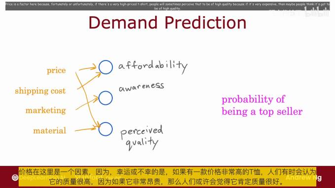
05:23有了这些关于负担性、认知度和感知质量的估算值，我们再把这三个神经元的输出连接到右边的另一个神经元上。
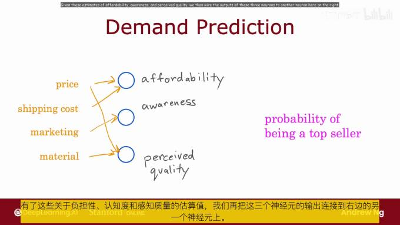
05:34这就是另一个逻辑回归单元，它最终输入这三个数字，并输出这款 T 恤成为畅销品的概率。
05:43那么，用神经网络的术语来说，我们要把这三个神经元归为一组，构成所谓的层。
05:53一个层就是一组神经元，它们以相同或相似的特征作为输入，并一起输出几个数字。
06:04所以，左边这三个神经元构成一个层，这也是我把它们上下叠画的原因。
06:10而右边这个单独的神经元也是一个层。
06:14左边的层有三个神经元，因此一个层可以有多个神经元，也可以像右边这个层一样，只有一个神经元。
06:24右边的这个层也被称为输出层，因为最终这个神经元的输出，就是神经网络预测的输出概率。
06:36在神经网络的术语中，我们还将负担性、认知度和感知质量称为激活值。
06:45“激活这个术语来自生物神经元，指的是一个生物神经元向其下游的其他神经元发送高输出值或众多电脉冲的程度。
06:58因此，这些关于负担性、认知度和感知质量的数字，就是该层这三个神经元的激活值。
07:07同样，这个输出概率就是右边这个神经元的激活值。
07:16所以，这个特定的神经网络将按如下步骤执行计算。
07:20它输入四个数字，然后神经网络的这一层使用这四个数字计算出三个新的数字，也称为激活值。
07:31接着，最后一层，也就是神经网络的输出层，使用这三个数字计算出一个数字。
07:40而在神经网络中，这四个数字的列表也被称为输入层。
07:48那不过是四个数字的列表而已。
07:52现在，我想对这个神经网络做一个简化，因为按照我目前的描述方式，我们必须逐个检查神经元，并决定它要从前一层获取哪些输入。
08:07所以，举个例子，我们说负担性只取决于价格和运费，认知度只取决于市场营销投入，等等。
08:16但如果你正在构建一个大型神经网络，那么逐个手动决定哪个神经元应该将哪些特征作为输入，工作量将会很大。
08:27而神经网络在实际实现中的方式是。
08:28而神经网络在实际实现中的方式是，某一层，比如中间这一层的每个神经元，都能访问前一层的每一个特征、每一个值，我现在要从每个输入特征都画箭头指向中间这每一个神经元。
08:53你可以想象，如果它试图预测负担性，并且它知道价格、运费、市场营销投入和材质这些信息，也许它会学着忽略市场营销和材质，仅仅通过恰当设置参数，只关注与负担性最相关的那个特征子集。
09:16为了进一步简化这个神经网络的表示和描述，我将把这四个输入特征写下来。
09:28我们将把神经网络看作拥有四个特征，它们组成了这个特征向量 x，这个特征向量被输入到中间的这层，然后该层计算出三个激活值，这三个激活值接着会变成另一个向量，输入到最后的输出层，最终输出这款 T 恤成为畅销品的概率。
10:03这就是一个神经网络的全部了。
10:08每个层输入一个向量，并输出另一个数字向量，例如，中间的这层输入四个数字，也就是 x，并输出三个数字，分别对应负担性、认知度和感知质量。
10:25再来补充一点术语，你已经看到这一层叫输出层，这一层叫输入层。
10:37也给中间这层起个名字，中间这层叫做隐藏层。
10:43我知道这也许不是最好或最直观的名字，但这个术语源于当你有一个训练集的时候。
10:52在训练集中，你能观察到 X 和 Y。
10:56你的数据集告诉你 X 是什么，Y 是什么。
11:00所以你得到的数据会告诉你正确的输入和输出是什么，但你的数据集不会告诉你负担性、认知度和感知质量的正确值是多少。
11:16你在训练集中看不到它们，这就是中间这层被称为隐藏层的原因。
11:23我想和大家分享另一种思考神经网络的方式，我发现这种方式有助于我建立关于它的直觉。
11:31让我暂时遮住这张图的左半部分，看看剩下的是什么。
11:36你在这里看到的是，有一个逻辑回归算法，或者说逻辑回归单元，它正在输入一款 T 恤的负担性、认知度和感知质量，并使用这三个特征来估算该 T 恤成为畅销品的概率。
11:54所以，这仅仅是逻辑回归。
11:59但有趣的是，这里使用的不是价格、运费、市场营销投入等原始特征，而是一组新的、可能更好的特征，即负担性、认知度和感知质量，它们有望更具预测性地判断一款 T 恤是否能成为畅销品。
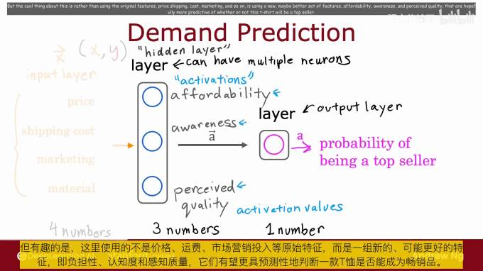
12:18因此，我们可以把这个神经网络看作是逻辑回归。
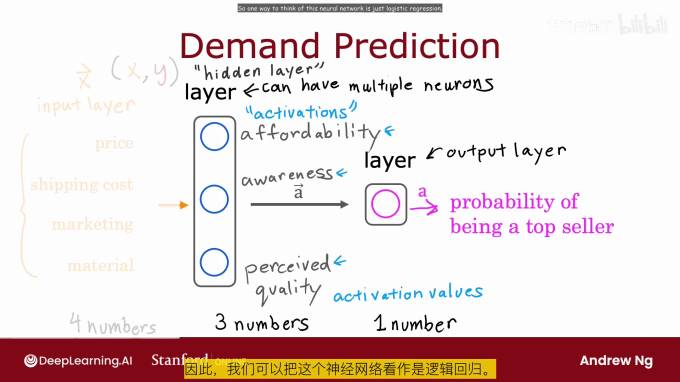
12:23但它这个版本的逻辑回归能够学习自己的特征，从而更容易做出准确的预测。
12:32事实上，你可能还记得之前课程中那个房屋的例子，我们说过，如果你想预测一栋房子的价格，你可能会取临街宽度或地块的宽度，乘以地块的深度，来构建一个更复杂的特征。
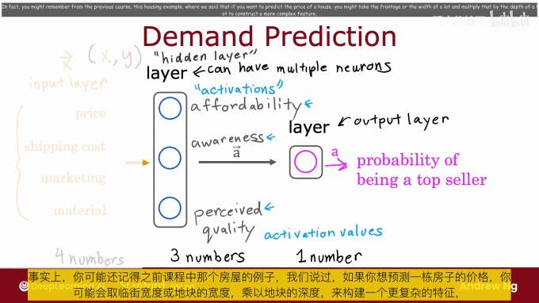
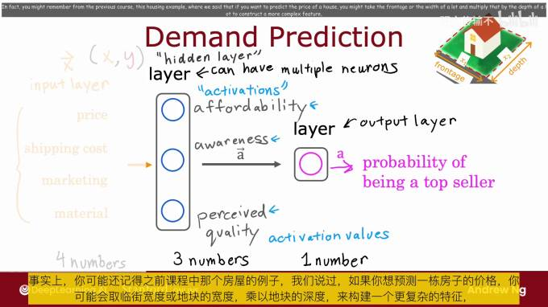
12:49即 x 一乘以 x 二，也就是地块的面积。
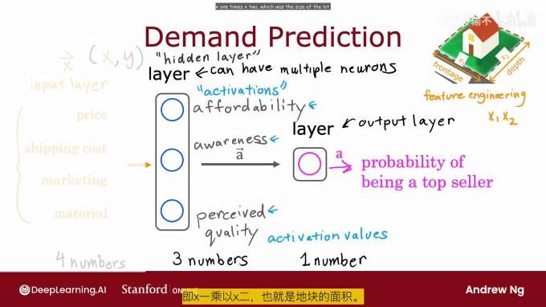
12:55在那里，我们做的是手动特征工程，必须查看 x 一和 x 二这两个特征，并手动决定如何将它们组合起来，以得出更好的特征。
13:06而神经网络所做的，是不需要你手动设计特征，它可以自己学习，正如你稍后会看到的，来生成它自己的特征，从而让学习问题对自身来说变得更容易。
13:23这正是使神经网络成为当今世界上最强大的学习算法之一的原因。
13:30那么，总结一下，神经网络是这样做的。
13:34输入层有一个特征向量，在本例中是四个数字。
13:39它被输入到隐藏层，然后隐藏层输出三个数字。
13:45我将用一个向量来表示这个隐藏层输出的激活值向量。
13:53然后，输出层以这三个数字作为输入，并输出一个数字，这个数字就是神经网络的最终激活值，或者说最终预测结果。
14:07需要说明一点，尽管我之前把这个神经网络描述为计算负担性、认知度和感知质量，但神经网络一个非常好的特性是，当你用数据训练它时，你不需要显式地决定神经网络应该计算哪些其他特征，比如负担性等等。
14:28它会完全自行决定在这个隐藏层中想要使用哪些特征。
14:38那么，你在这里看到了一个神经网络的例子，这个神经网络只有一个隐藏层。
14:46我们再看看其他几个神经网络的例子，特别是那些含多个隐藏层的例子。
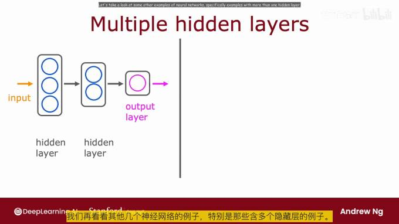
14:54这里有个例子：这个神经网络有一个输入特征向量 x，它被馈送到一个隐藏层，我将称之为第一个隐藏层。
15:06那么，假设这个隐藏层有三个神经元，它就会输出一个包含三个激活值的向量。
15:14这三个数字随后可以被输入到第二个隐藏层。
15:19而如果这个第二个隐藏层有两个神经元，即两个逻辑单元，那么这个第二隐藏层将输出另一个向量，这次包含两个激活值，该向量可能会被传递到输出层，然后输出神经网络的最终预测结果。
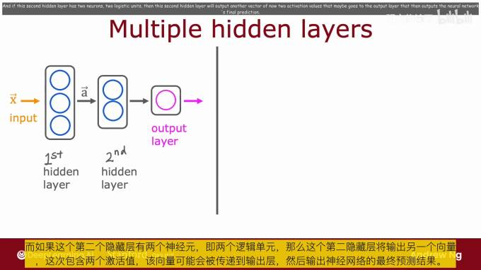
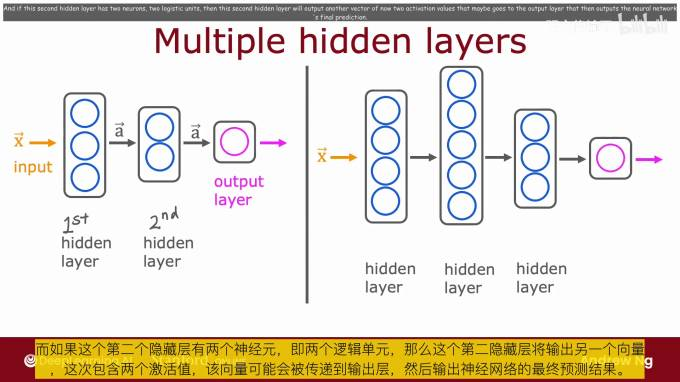
15:38或者，有力一“例于。
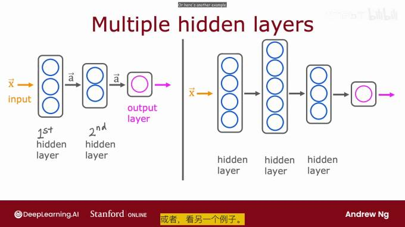
15:41这里有一个神经网络，它的输入进入第一个隐藏层。
15:46第一个隐藏层的输出进入第二个隐藏层，再到第三个隐藏层，最后到达输出层。
15:55当你在构建自己的神经网络时，你需要做出的一个决策是：你想要多少个隐藏层，以及你希望每个隐藏层包含多少个神经元。
16:06要多少个隐藏层，每个隐藏层要多少个神经元，这就是神经网络的架构问题。
16:16你会在本课程的后面学到，为神经网络选择合适架构的一些技巧。
16:23但选择正确的隐藏层数量和每层的隐藏单元数量，也会影响你学习算法的性能。
16:32所以，在课程后面，你也会学到如何为你的神经网络选择一个好的架构。
16:38哦，对了，在一些文献中，你会看到这种有多个层的神经网络被称为多层感知机。
16:46所以，如果你看到那个术语，它指的就是你在当前幻灯片上看到的这种神经网络。
16:53那么，这就是一个神经网络。
16:56我知道我们在这个视频中讲了很多内容，感谢你能坚持听下来。
17:01但你现在已经知道神经网络是如何工作的了。
17:05在下一个视频中，我们来看看这些概念如何应用到其他领域。
17:11特别是，我们将看一看人脸识别这个计算机视觉应用。